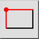
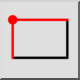
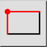
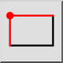

S サイズ指定の四角形
ツールバー/アイコン:
 

メニュー: D 描画 > S 成形 > S サイズ指定の四角形
ショートカット: R, S
コマンド: rectanglesize | linerectanglesize | rs
ツールバー/アイコン:
 

メニュー: D 描画 > S 成形 > S サイズ指定の四角形
ショートカット: R, S
コマンド: rectanglesize | linerectanglesize | rs
四角形を、指定したサイズで作成します。